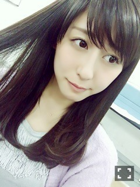
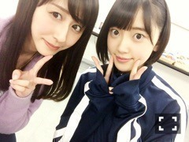
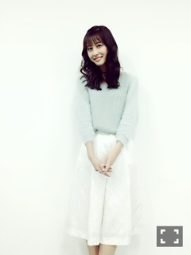
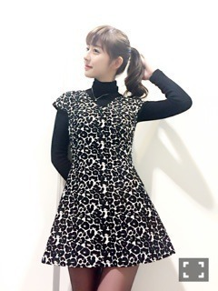

| 2016/01 12 Tue | 斎藤ちはる 握手会！日村賞の行 方。(´>∀<｀)ゝ |
ちはるーむへようこそ！！
今日は成人の日。
新成人の皆様、おめでとうございます！
私はついに来年が成人式...(> <)
もう来年だなんて信じられません(> <)
早いよ〜...
1年1年大切に過ごさなきゃ♪！

この週末は、個別握手会、全国握手会がありました♪
まず、全国握手会は未央奈と同い年ペア！

珍しいペアだね〜って言われたけど、
一緒にレーンをキックボードで移動してわいわい騒いだり、色んなお話したりと楽しかったね(﹡ˆ ˆ﹡)
未央奈ファンの方もありがとうございました！
推しに似たのか、面白い人が多かった印象です( ◦˙ ˙◦ )笑
独特の感性が好き。
ちはるーむめいとさん、長い列をわざわざ並んで会いに来てくれてありがとう♡
あんまり喋れなかったのが悔しいから
まだまだ13thの個別も残ってるし♪
13th取れなかった方、13thだけじゃ喋り足りないよ〜って方、14thで待ってるね(﹡ˆ ˆ﹡)
やっぱりちはるーむめいとさんくると
安心するし、落ち着きます\( ˆoˆ )/
いつか全握レーンをちはるーむめいとさんだらけにするぞ...！！！
そして個別握手会♪
コーデはこちら！！

チョーカー: bubbles
tops: bubbles
bottoms: The Virgnia
最近、bubblesの服が大好きなんだ♡
可愛くておしゃれで個性的で...！
実はモデルのゆりっぱちゃん(YuRiちゃん)が大好きで、お洋服とかメイクとかスキンケアとか参考にしてるんだ〜♪オススメしてた帽子とかメイクグッズとか買ってみたり( ◦˙ ˙◦ )
ゆりっぱちゃんと同じくらいぺこちゃん(オクヒラテツコちゃん)も好き...！最近テレビもよく出てて、その前からペコクラブっていうお店にお邪魔してお買い物したり、センスも憧れなの( ◦˙ ˙◦ )
全然載せれなかった、12月27日の名古屋での個別握手会のコーデも載せるね！

one piece: ZARA
乃木坂工事中の、妄想クリスマスの時に着てたワンピースに黒タートルを合わせて寒い外でも着られる仕様にしました♪
個別握手会、たくさんの方々が列に並んでるくださってるのを見ると本当に幸せです...！
私にわざわざ会いたいと思ってくれてる方がいるだけで嬉しいのに、
笑顔に癒されてます！とか、
元気の源だよ！とか聞くと余計に心がきゅ〜っとなって
これからも頑張ろうっていう活力になります。
本当にありがとう。
5部じゃ遅くて行けないよ〜っていう声も全握で聞いたので、
たくさんの方が来られるように部数を増やしていく事も目標です。
頑張るぞ！！
さてさて...！
昨日の乃木坂工事中、観てくれましたか？？
2年ほど前の夏恋グランプリの時に棚ぼたでいただいた日村賞の争奪戦でした。
私たちのためにわざわざお店に足を運んで選んでくれたっていうのを考えると嬉しくて、本当に素敵な公式お兄ちゃんだなと改めて感じました！
日村さんも設楽さんも大好きです♪
日村賞、私が欲しいと言ったのは2mもある巨大なくまのぬいぐるみ♪
大学生にもなって、なんでぬいぐるみ！？と思う方もいると思うんですが...
お恥ずかしながらぬいぐるみが大好きなんです♡
昔から人形遊びよりもぬいぐるみが大好きで、
先日のユニバでも自分のお土産のぬいぐるみを買ってその子と一緒に寝るくらいぬいぐるみ好きなのです...⊂((・x・))⊃
ユニバやディズニーの自分へのお土産はぬいぐるみにしようと心に決めています...(｡･o･｡)ﾉふふ
残念ながら勝負に負けてしまい、
玲香がぬいぐるみゲット！！
だったのですが...
収録終わった後に玲香が駆け寄ってきて
「ぬいぐるみあげるよ！持って帰って♪」
って言ってくれたの...ヽ(；；)丿！
玲香、女神様！！！
すごく嬉しかったなあ〜♡
優しい。。
早速2mのぬいぐるみに名前付けちゃいました(｡･o･｡)ﾉ
その名も「くまごろー」
斎藤家の癒し担当として、新しい家族です♡笑
くまごろーとの写真をもあげるね♪
突然発表されたまいまいの卒業。
正直まだ、まいまいがいなくなることが想像できなくてどうしたらいいかわからないけど
残された時間を大切に過ごしていきたい。
まいまいの優しさにはいつも癒され、支えられたから
その優しさを返していきたい。
まいまいのような素敵な人になれるように。
まいまい大好き〜( ;o; )
斎藤ちはる